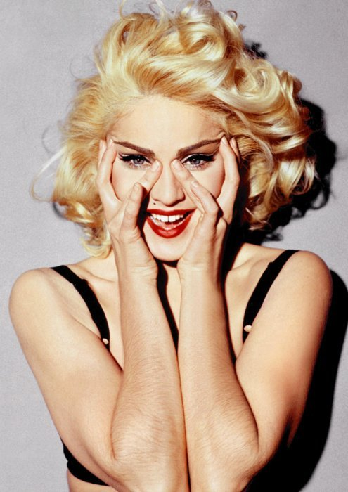

مادونا - ملكة البوب
في ٢٠ مايو ٢٠١٥ كسرت مادونا الرقم التاريخي لعدد الأغاني الأكثر شيوعًا في قائمة بيلبورد بأغنيتها جوست تاون من آخر ألبوم لها، رِبل هرت الذي صدر هذا العام، لتصبح صاحبة أكبر عدد من الأغاني الأكثر شيوعًا (٤٥ أغنية) في تاريخ القائمة.
سبق هذا الإنجاز تحطيم مادونا لأرقام قياسيّة كثيرة. فطبقًا لموسوعة جينس، تعتبر مادونا الفنانة الأكثر مبيعًا في التاريخ برقم قياسي هو ٣٠٠ مليون وحدة مباعة، كما تمتلك الرقم القياسي لأكبر عدد الأغاني المصورة التي حازت على جائزة الإم تي في بإجمالي ٢٠ جائزة، وهي أكثر فنانة بيعت لها تذاكر حفلات في التاريخ، خاصة جولتها في عام ٢٠٠٦ تحت اسم كُنفِشنز أُن أ دانس فلور، والتي حقّقت أكثر من ٢٠٠ مليون دولار، وشاهدها أكثر من مليون متفرج.
بدايتها كراقصة
ولدت مادونا لويز تشيكونه في ١٦ أغسطس ١٩٥٨ في ولاية ميتشِجَن الأمريكيّة لأب من أصول إيطاليّة وأم من أصول كنديّة فرنسيّة. نشأت نشأة كاثوليكية إلى حد ما، مما جعلها تستعير ثيمات الكنيسة الكاثوليكية بشكل متكرر خلال مسيرتها الفنية. أثّرت وفاة أمها المبكّرة بشكل بالغ على طفولتها ومراهقتها، ما دفعها للحديث عن تلك التجربة عدّة مرّات خلال مسيرتها الفنيّة التي بدأتها كراقصة في الأساس، حيث التحقت بكلية الموسيقى والمسرح والرقص بجامعة ميتشِجَن، لكنّها لم تكمل دراستها وانتقلت إلى نيويورك عام ١٩٧٨ لتعمل كراقصة خلف فرق موسيقيّة مختلفة. جاءت بدايتها الحقيقيّة عندما تعرفت على الموسيقي دان جيلروي، وأسست أول فرقة موسيقية لها باسم ذ بريكفاست كْلَب.
أثناء الحديث عن مادونا، يُسقط هذا الجزء من حياتها رغم أهميّته وأثره على اختياراتها الفنيّة اللاحقة. فمنذ أوّل ألبوم، ميّزت نفسها بفكرة الاستعراض، والذي دائمًا ما كان يلعب على فكرة إثارة الدهشة أو الاستفزاز، لكن مع الحفاظ على قيم المتعة والتسلية. في أول حفل لجوائز إم تي في عام ١٩٨٤ نراها تغنّي أغنيتها لايك أ فيرجن بقدر لا بأس به من الاستهتار والسخرية التي تظهر من خلال أدائها واختيارها للملابس، وربطها لفكرة نقل المعنى من خلال الأداء المسرحي أكثر من أي شيء آخر. يتضّح لنا أن صوتها آنذاك – وإلى الآن – صوت غير مميّز، محدود، بل وبالعكس يكاد أن يكون مزعجًا في افتقاره لأبسط مقوّمات الصوت السليم.
لكن يتجلّى ذكاء مادونا في استغلال العنصر البصري لخلق قدر لا بأس به من تسلية تصعب مقاومتها. بل من الممكن القول أن ذلك الخليط من الإذهال البصري مع عنصر لا بأس به من الهزل والغرابة وتمجيد الذات الذي صاحب أداءها في لايك أ فيرجن، وجد نتيجته المنطقيّة عام ٢٠١٢، بعد ٢٨ عامًا وعشرة جولات عالمية، عندما قامت مادونا بإحياء الوقت المستقطع من نهائي الدوري الأميركي واستعانت باستعراضات السيرك وإعادة تمثيل مشاهد من فيلم كليوبترا (١٩٦٣) لدرجة مبالغ بها أثارت حفيظة البعض.
ماذا عن الموسيقى؟
نشأت مادونا على أنقاض موسيقى الديسكو وسلفها التاريخي، موسيقى الفانك. كانت نهاية موسيقى وثقافة الديسكو مأساوية بعض الشيء، حيث انتهت بما يعرف بـ 'ليلة تدمير الديسكو'، حيث اشتبك مشجعي فريقين ودمروا أسطوانات الديسكو في ١٢ يوليو ١٩٧٩. بل إن من أنتج أغنية مادونا لايك أ فيرجن كان نايل رودجرز، أحد أهم عازفي الجيتار والبايس في تلك الفترة.
بخلاف ألبومي لايك أ فيرجن (١٩٨٩) وراي أُف لايت (١٩٩٨)، تقع جميع ألبومات مادونا تقريبًا على شفا موسيقى مابعد–الديسكو والـ دانس-بوب، بتنويعات مختلفة اعتمدت بالأساس على الذوق العام والمنتجين الذين عملت معهم. يظهر ذلك جليًا في ألبوم مثل ميوزك (٢٠٠٠) وكُنفِشنز أُن أ دانس فلور (٢٠٠٥)، اللذان يمثلان جذور مادونا الموسيقية بشكل كبير، والتي تكونت في نوادي الرقص الأندرجراوند في نيويورك في نهايات السبعينيّات والثمانينيّات. لم تستطع مادونا تجاوز التأثير الكبير الذي خلفته مثل تلك الموسيقى عليها، إلا في راي أُف لايت (١٩٩٨) والذي يعتبره الكثيرون أكثر أعمالها مغامرة.
سر نجاحها
واكبت مادونا مسيرة تطور الموسيقى الشائعة بقدرة ذكيّة على استشفاف التغيّرات التي تطرأ على الذوق العام. هذا أحد أهم أسباب نجاحها، وليس قدراتها الموسيقيّة الفريدة، التي هي حقًا متواضعة. يكشف لنا نجاحها في اختيار واجتذاب شركائها في الأعمال وفي أي وقت جانبًا هامًا جدًا من فكرة تغيّر الذوق وعلاقته بالإنتاج. فمنذ بدايتها مع المنتج نايل رودجرز في لايك أ فيرجن، تتبعت مادونا التحولات الموسيقيّة على مستوى الذوق العام بحساسية شديدة، لتغيِّر المنتجين، والملحنين، والمؤلفين بشكل دوري بما يوافق تلك التغيرات. لم يكن هذا من ناحية الإنتاج فقط، ولكن أيضًا من ناحية تعميم ودمج ما يحدث على الهامش داخل الذوق العام أو ما يستهلك على مستوى أكبر.
المثال الآخر – والذي تتجلّى فيه فكرة التغيير وعنصر المخاطرة الذي دائما ما يصاحب تغيير أسلوب أو التوجه الذي اعتادته مغنية مثل مادونا – يأتي مع ألبومها بِدتايم ستوريز (١٩٩٤)، الذي شهد نقلة نوعيّة في موسيقتها، كما أظهر لنا تغييرًا واضحًا في عملية الإنتاج من منتجين مثل شب بتيون وأندر لاتس، إلى منتجي الـ آر ن بي والـ هيب جوب، الذين طوّروا موسيقى الـ آر ن بي لتناسب الذوق المختلف. رغم اعتبار البعض أن مثل تلك النقلة كانت حركة استراتيجية لإعادة تشكيل صورتها النمطيّة، إلا أن مادونا لم تغير صورتها في تلك الفترة بشكل كبير، بل غيرت موسيقاها للتماشي مع تغيّر الذوق وأنماط الاستهلاك.
نرى نفس تلك "التركيبة" في أغنية أحدث مثل، جرلز جَن وايلد (٢٠١٢)، حيث تُخلط مرة أخرى عناصر من موسيقى الإلكترو–بوب مع عناصر من موسيقى التيكنو، وذلك من خلال العمل مع منتج ودي جاي موسيقى التكنو بني بناسي، واستغلال شهرة فرقة مثل كازاكي، مع استعارة موتيفات من خلفيّتها الكاثوليكيّة. لكن نرى هنا أن مادونا تكرس قدرًا لا بأس به من النرجسّية حين تستخدم تاريخها الفني، سواءً من ناحية المحتوى الفني أو الجماليات، كإشارة أو مرجعية في حد ذاتها، ما يترك أثرًا خانقًا لدى المشاهد.
هل هذا كل ما لدينا؟
يعجز التحليل التقليدي للموسيقى عن شرح ظاهرة مثل ظاهرة مادونا. لكن ما يمكن طرحه كمدخل لفهم ظاهرة فنية مثل مادونا هو الاعتراف بأنها – بشكل غير مسبق – أصرت على التحكم بشكل كامل في عناصر العملية الإنتاجّية (بداية من اختيار المنتج والمؤلف والملحن إلى المخرج والموزع) من ناحية، واستخدامها آلة الإعلام لإعادة تشكيل التصورات المختلفة عن شخصيتها سواء كإنسانة عادية أو كفنانة. ففي النقطة الأولى، تكاد تتفرد مادونا من بين أبناء جيلها (جانِت جاكسون على سبيل المثال، التي تمتعت بنجاح يوازي نجاح مادونا، لكن ظلت مخلصة لجذورها الموسيقية في الـ رن بي والـ هيب هوب) في استغلال كم هائل من الطاقات الإبداعية لمن حولها، بشكل ساعدها على ترويج وتعميم أفكار موسيقية من الممكن أن تكون خاصة بوسط أو مشهد فني معين، وجعلها جزءًا من الموسيقى الرائجة بقيمة إنتاجية غير مسبوقة وانتشار عولمي. يعتقد بعض النقاد أن هذه الموهبة هي أحد أهم الأسباب وراء نجاح مادونا.
النقطة الثانية هي حيلة ودهاء مادونا في استغلال حياتها الشخصية وصورتها العامة كمصدر مستمر، ليس فقط لإنتاج صورة الفتاة التي تحب الجنس وتؤمن بحرية الجسد، والتي هي في نفس الوقت في حالة تناقض مع معتقداتها الكاثوليكية والقيم الاجتماعية وغيرها، لكن أيضًا للترويج الدائم والمتجدد لقدرتها على ابتكار نسخ جديدة من ذاتها يمكن تسليعها واستهلاكها بشكل مستمر نتيجة لذلك التجدد، لتصبح حقًا أنجح تجلّي للذات كموضوع للاستهلاك كما كتب زيجمونت باومن.
ستدخل مادونا التاريخ حتمًا، لكن ليس لمآثرها الموسيقية، بل لقدرتها المذهلة على إنتاج موسيقى رائجة بأفكار وعناصر الأندرجراوند، ووضع كل هذا في عملية إنتاجية بارعة لا تخلو من الإبهار والمتعة.
الهوامش
- عمليًا القائمة كما نعرفها بدأت عام ١٩٥٨، ما يدعونا في التفكير بالعمر المفترض لفكرة الأغاني الأكثر شيوعًا أو فكرة صناعة الموسيقى واستهلاكها.
- على سبيل المثال تفرّدها في شراكتها مع تايم وورنر للإنتاج الموسيقي وحصولها على نسبة تصل حوالي ٢٠%، وهو أمر فريد من نوعه في عالم الإنتاج.
- مع بعض الاختيارات السيئة بالطبع، ولكن كانت هذه دائمًا السمة الحاكمة لاختياراتها الفنية.
- كانت نهاية موسيقى وثقافة الديسكو مأساوية بعض الشيء، حيث انتهت بما يعرف بـ 'ليلة تدمير الديسكو'، حيث اشتبك مشجعي فريقين ودمروا أسطوانات الديسكو في ١٢ يوليو ١٩٧٩.
- التي اشتهرت بأغانيها التي تلعب على أفكار الجنسانيّة والتمثيل الجندري.
- تاج الأشواك، بداية الأغنية بنوع من الاعتراف.
- بخلاف مايكل جاكسون على سبيل المثال والذي كان له تأثير حقيقي في الموسيقى من حيث الأفكار والتأليف والغناء.
- عملها مع منتج مثل ميرواز أحمدزاي والذي كان غير معروفًا خارج أوساط الإلكترو الفرنسية.